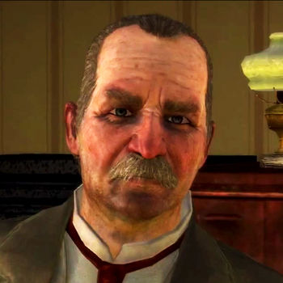
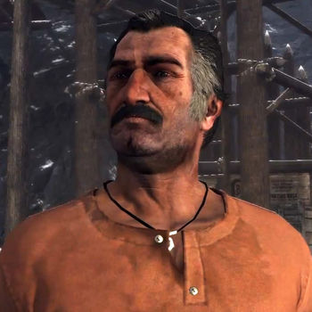
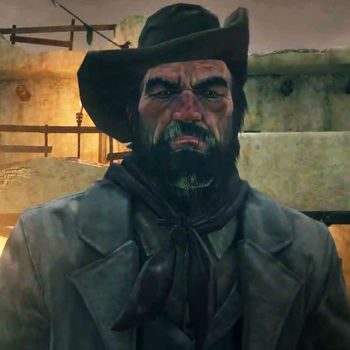
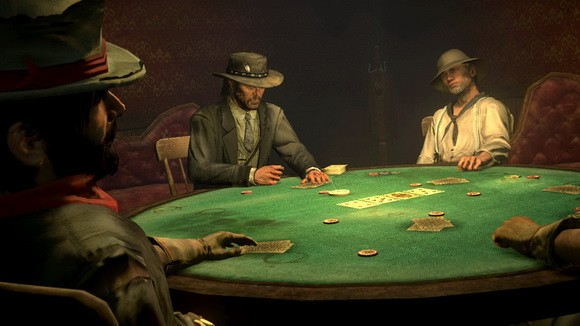
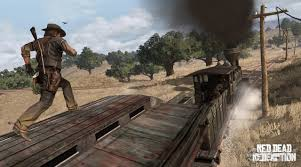
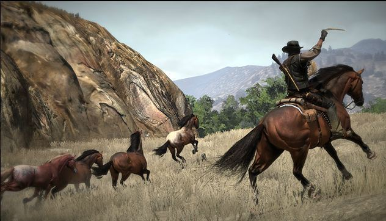
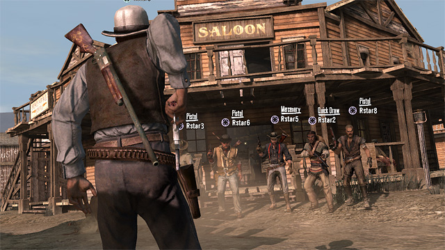
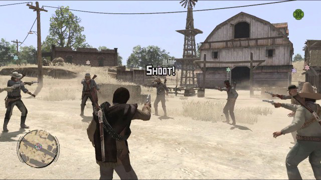
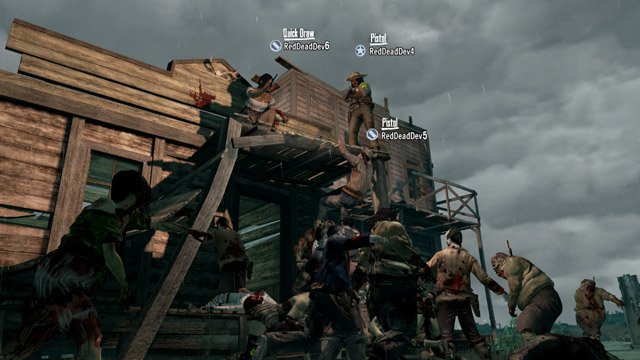

The story of Red Dead Redemption takes place in the year 1911. The game takes place in 2 fictionalized U.S. States and one fictionalized part of mexico. The story begins with our protagonist John Marston, A former outlaw trying to live a normal life with his family leaving behind his past life. John was part of a gang run by a man name Dutch Van Der Linde along with John there were many other known members. Bill Williamson, Javier Escuella, Abigail Marston and Arthur Morgan. John chose to leave the gang and, settled down with his wife Abigail Marston and his son Jack Marston. A few John is approached by the Bureau of Investigation agents Edgar Ross and Archer Fordham and is forced to track down and kill his former friends. If John refuses he is never allowed to return to his family. After many twists and turns he kills Bill and Javier and then meets with Edgar and Archer thinking that his task is finished however Edgar tells him that he has to help with tracking down Dutch Van Der Linde. John learns that Dutch formed a new gang that goes by the name Dutch's Gang and sets of to finish him off. With the help of U.S. soldiers John attacks Dutch's hideout. During the attack John chases Dutch up a cliff where Dutch slowly backs up and commits suicide by jumping off the cliff. John is then released from the deal with Edgar Ross and returns to his fanily and ranch. John devotes his time to tending to his ranch and protecting his family. However his worries are not over. John is forced to repel an attack made by U.S. soldiers, Lawmen, and government agents led by Edgar Ross. John manages to defend many waves of attacks and gets his family to safety but stays back to hold back the attack. Dispite all his efforts John is shot numerous times and dies. He is then later buried by his family on a hill by his ranch. The story concludes itselft three years later when Abigail Marston dies Johns son Jack tracks down and kills Edgar Ross in a duel.
  
Red Dead Redemption is a western themed third person action/adventure game. The player controls one main protagonist named John Marston and goes around completing sets of missions to progress through the story. The missions can be triggered in any order once the player unlocks them. Outside of missions the player is free to roam around and do many side activities. Such as taming horses, gang hideouts, black jack, hunting, arm wrestling, hunting bounties, camping, dueling, cattle hurding, poker and money other crimes such as robbing people. The game also has a honor system, If you do crimes your honor goes down but if you help people then your honor goes up. The more honor you have the nicer people are to you. However if you commit crimes around witnesses or deputies they will run to the sherifs station and you will get a wanted level, the higher your wanted level the more officers come after you. If you get caught by the police you have to pay a bounty however if the payer does not have enough money then they have to complete bounty missions until they have enough. If a player takes out all police than bounty hunters will continue to track the player until they pay off the bounty. Gunplay is also a huge part of RDR. Players can take cover while shooting and peak around corners to scout for enemys. John Marston also has a special ability that slows down time to make it easier to aim with your weapon. This ability was added to compensate for the lack of much weapon customization due to the time period. Players have a wide array of weapons they can choose from, the weapons in the game include pistols, revolvers, shotguns, rifles, scoped rifles, kives, lassos and throwing weapons such as tomahawks. The wide array of weapons adds a lot of replay ability to the game. Players can choose how they want to approach a mission, going in guns blazing or picking off enemies with a scoped rifle.
| Developer: | - Rockstar San Diego - Rockstar North |
|---|---|
| Publisher: | - Rockstar Games - AK Tronic Software |
| Release Date | - May 21, 2010 |
| Platforms | - Playstation 3 - Xbox360 - Xbox One |
| Modes | - Single Player - Multiplayer |
| Genre | - Third Person Shooter - Action Adventure - Western |
| Budget | 110 Million |
| Rating | ESRB 17+ |
  
The multiplayer for Red Dead Redemption has a maximum of 16 players per session. There were 3 gamemodes initially; a free for all where players try to get the most kills, a team based mode where a group of 4 people have to try to get a certain amount of kills before other teams and a capture the flag mode where teams have to defend their bag of gold from other players. Each game begins with a standoff and the winners are able to move to any part of the map to make preperations for battle, they are able to find crates scattered around the map which contain ammo, weapons and powerups. Players are able to level up as they play and different levels award different things such as different weapon skins and mounts. Later on in the life cycle of the game more modes were added through DLC. The game mode included in the Liars and Cheats DLC was Stronghold where two teams attack and defend and switch roles at the end of each round. Two other modes were added with the Undead Nightmares; Undead overrun where players (solo or team) have to survive incoming hordes of zombies and land grab. Outside of these modes players are free to roam around the map doing whatever they wish.
  